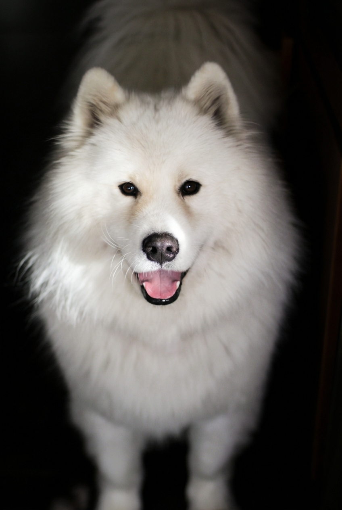

IMG_0644_Original.jpeg
Multi-LLM Analysis
Original Review
This is a strong pet portrait with excellent focus and engaging eye contact. The main editing goal is to manage the high dynamic range of the white fur against the light source while removing minor edge distractions.
- Reduce Highlights
- Selective Dodge (Eyes)
- Crop or Heal
The image has a strong, endearing subject with pleasing separation from a dark, unobtrusive background. Minor exposure and highlight control will improve fur detail, while selective enhancement of the eyes/nose will increase impact without changing the intended intimate indoor mood.
- Raise overall exposure slightly (+0.2 to +0.4) and lift midtone shadows on the face/fur (+10 to +20) while keeping the background darker
- Reduce highlights/whites on the brightest fur areas (Highlights -10 to -20, Whites -5 to -15) and add a touch of Texture/Clarity to fur (Texture +10 to +20, Clarity +5 to +10)
- Apply a selective mask to the eyes and nose: slightly increase exposure (+0.1 to +0.2), add contrast/clarity, and sharpen locally; optionally brighten catchlights
This is a charming pet portrait with good composition and expression, but it suffers from underexposure and soft focus that diminish its impact. The primary improvements should focus on lifting exposure to reveal detail in the white fur and background, sharpening key facial features, and correcting the cool color cast. These adjustments will transform this from a snapshot into a more polished portrait while maintaining the dog's appealing character.
- Increase overall exposure by +0.5 to +0.7 stops, focusing on lifting shadows in the body and background areas
- Apply selective sharpening to the eyes, nose, and facial features using unsharp mask or clarity adjustment
- Warm the white balance by adjusting temperature slider +200-300K to create a more natural, inviting tone
Combined Improvements Applied:
- Reduce Highlights
- Selective Dodge (Eyes)
- Crop or Heal
- Sharpening
- Raise overall exposure slightly (+0.2 to +0.4) and lift midtone shadows on the face/fur (+10 to +20) while keeping the background darker
- Reduce highlights/whites on the brightest fur areas (Highlights -10 to -20, Whites -5 to -15) and add a touch of Texture/Clarity to fur (Texture +10 to +20, Clarity +5 to +10)
- Apply a selective mask to the eyes and nose: slightly increase exposure (+0.1 to +0.2), add contrast/clarity, and sharpen locally; optionally brighten catchlights
- Crop slightly tighter from the bottom and right edge to reduce dead space and edge distractions; keep the head near the upper third
- Fine-tune white balance toward neutral (slightly cooler, ~-200 to -500K) and reduce any magenta tint if present (Tint -2 to -6)
- Increase overall exposure by +0.5 to +0.7 stops, focusing on lifting shadows in the body and background areas
- Apply selective sharpening to the eyes, nose, and facial features using unsharp mask or clarity adjustment
- Warm the white balance by adjusting temperature slider +200-300K to create a more natural, inviting tone
- Add a subtle vignette removal or brighten the edges to reduce the heavy darkening around the subject
- Enhance whites and highlights specifically on the fur to add separation and dimension while avoiding blown highlights
Re-Review After Editing
This is a strong pet portrait with excellent focus on the eyes and nose. The main goal of editing is to manage the dynamic range of the white fur to ensure detail isn't lost in the highlights and to clean up the background for a pure studio look.
Strong pet portrait with pleasing subject placement and a naturally dramatic background. Main gains come from recovering highlight texture in the fur and adding targeted micro-contrast/sharpening to the face and eyes for a crisper, more engaging look.
This is a charming pet portrait with good composition and a happy subject. The main issues are slight softness in focus, overexposed white fur losing texture, and a background that could be deeper black for better subject separation. With targeted sharpening, highlight recovery, and background enhancement, this image can significantly improve while maintaining its warm, friendly character.
Before & After Comparison